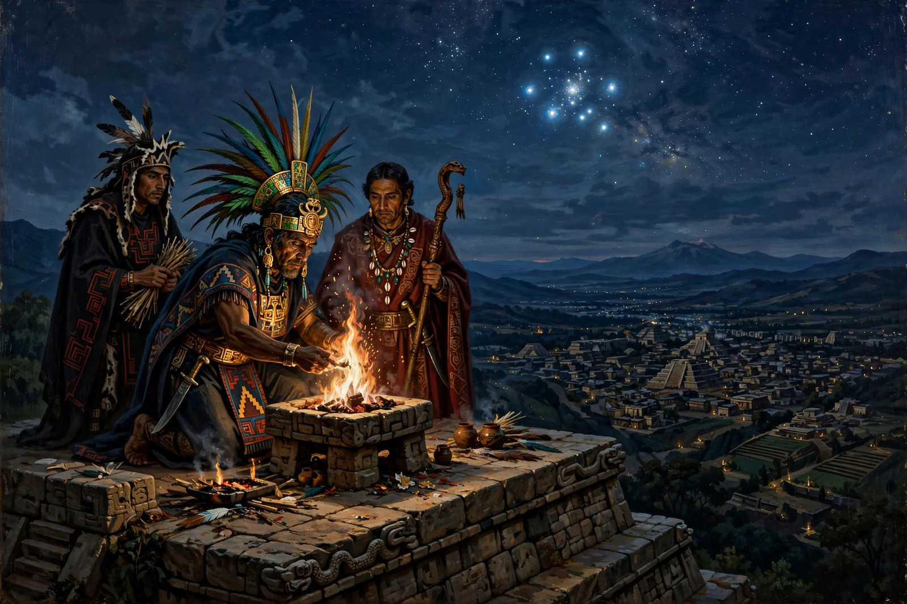

New Fire ceremony
| New Fire ceremony | |
|---|---|
| Nahuatl name | Toxiuhmolpilia ("Binding of the Years") |
| Frequency | Once every 52 years (one calendar round) |
| Principal site | Huixachtlan (Cerro de la Estrella), near Tenochtitlan |
| Last pre-conquest celebration | 1507 |

The New Fire ceremony (Nahuatl: Toxiuhmolpilia, "the Binding of Our Years") was the most solemn rite of the Aztec calendar, held once every 52 years when the 260-day ritual calendar and the 365-day solar calendar realigned to complete a "century" or calendar round. It marked the renewal of time itself: if the new fire could not be kindled, the Aztecs believed, the Fifth Sun would end, the earth would be destroyed by earthquakes, and the star-demons called tzitzimime would descend in darkness to devour humanity.
The rite
In the days before the ceremony, all fires in the empire were extinguished; household goods were broken or thrown away, houses swept clean, and people fasted. Pregnant women were shut in granaries lest they turn into monsters, and children were kept awake so they would not be transformed into mice. At nightfall on the appointed day, priests processed to the summit temple of Huixachtlan — the Hill of the Star (Cerro de la Estrella), south-east of Tenochtitlan — and watched the Pleiades (Tianquiztli). When the constellation crossed the zenith, signalling that time would continue, a captive was sacrificed on the summit and a fire drill kindled in his opened chest. If the flame caught, runners seized torches from it and raced to relight the temple braziers of Tenochtitlan and then every hearth in the empire; new household goods were made, debts settled, and the world began again. If it failed, darkness would be eternal.
Dates and history
The ceremony was older than the Aztecs and was performed by the peoples of the Valley of Mexico for centuries. The last pre-conquest New Fire was celebrated in 1507 under Motecuhzoma II; the relief known as the Binding of the Years, showing a year-bundle, commemorates such an occasion. The next would have fallen in 1559, by which time Tenochtitlan had fallen and the rite was suppressed. Modern Nahua and Mexicayotl communities have revived versions of the ceremony at Cerro de la Estrella, and it remains the best-known illustration of the Aztec conception of cyclical time.
See also: Mesoamerican religion · Nanahuatzin · Human sacrifice in Aztec culture · Florentine Codex